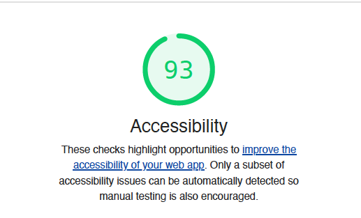
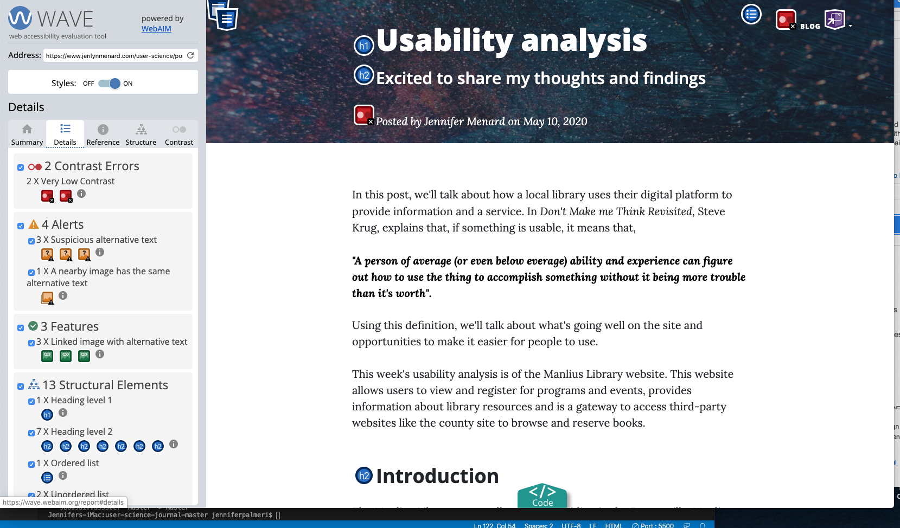

To implement accessible website components- the right way, should be completed during a project's planning phase. Fixing and updating website features to conform to accessibility standards is challenging. It's also a valuable learning experience because it teaches you to write better HTML and CSS-
This week evaluated my website --user science journal using Wave and Lighthouse to identify features that don't conform with W3C's Web Content Accessibility Guidelines (WCAG)
Findings
Lighthouse
Lighthouse is an open-source tool that audits websites for accessibility, SEO, and speed. The website scored a 93.
 screen capture, Lighthouse toolTwo opportunities were identified to improve the acessible features:
- Elements required greater contrast
- Links didn't have a discernable name
Wave
Wave identified the same opportunities as the Lighthouse tool- the contrast problems in the header and link problems in the footer.
 screen capture, WAVE tool
screen capture, WAVE tool
Issues Addressed
Contrast Errors
The opportunity was frustrating to fix because the website format is a Bootstrap template, so I had to locate the right CSS modifiying it. I changed the mastheader photographer, updated and confirmed the text color to white and enlarged the font size. The contrast error still appears as an error- but I determined that its a false error.
Empty Links
The empty links were located at the site's footer. I updated the link to the websites and included a description of its purpose.
Conclusion
Correcting the contrast error was teh most challenging because after I made updates- I ran the site through WAVE again and the error remained. I ended up doing additional research to determine that it was a false error-
A second challenge with working on a template is- I was apprehensive to changing HTML classes- and CSS features because I didn't want to "break" the template.